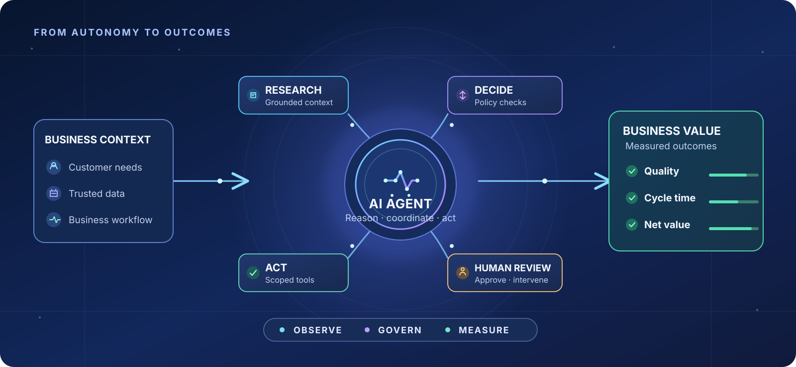
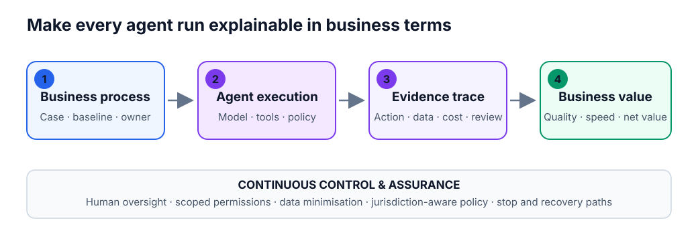
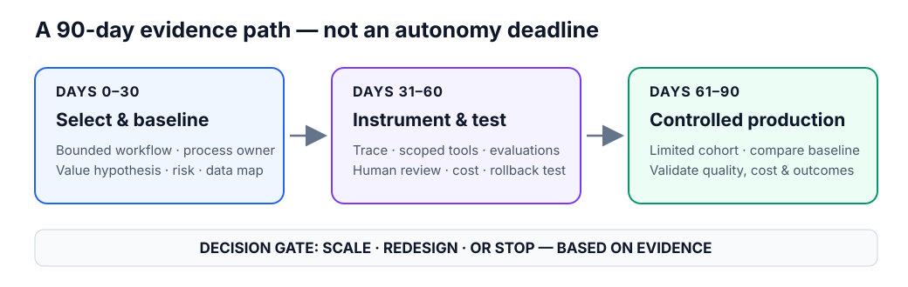

AI Strategy & EMEA
AI Agent Visibility to Business Value - EMEA
The executive question has shifted from “Can an agent complete a task?” to “Can we prove that an agent improved an important business outcome, at an acceptable cost and risk, across the markets where we operate?”

Executive view
AI agents are moving from demonstrations into enterprise roadmaps, but deployment remains uneven and the mechanics for governing autonomous work are still maturing. Gartner’s 2026 Hype Cycle article reports that 17% of organizations surveyed had deployed agents, while more than 60% expected to do so within two years. Gartner also describes governance, security and agentic AI cost management as emerging enterprise concerns, and cautions that most deployments remain narrowly scoped.[1]
The strategic opportunity is real; so is the execution gap. Gartner’s 2025 forecast that more than 40% of agentic AI projects would be cancelled by the end of 2027 was a forecast, not an observed cancellation rate. Its stated risks—rising costs, unclear value and inadequate risk controls—are useful prompts for investment discipline, not a reason to abandon the category.[2]
For EMEA leaders, the practical response is to make every deployed agent visible in two ways: operationally visible (what it did, with which data and permissions) and economically visible (what changed in the process and whether the change created net value). Without both, autonomy increases faster than accountability.
1. The market signal: ambition is ahead of evidence
Multiple public signals show organizational intent, but they measure different populations and should not be combined into a single adoption rate:
- Gartner, 2026: 17% deployed agents; over 60% expected deployment within two years, according to Gartner’s 2026 CIO and Technology Executive Survey as reported in its Hype Cycle analysis.[1]
- Microsoft, 2025: its Work Trend Index reported that 81% of surveyed leaders expected agents to be moderately or extensively integrated into their AI strategy in the next 12–18 months. The report analyzed a global survey and productivity data; these are vendor-published findings, not an EMEA-specific representative estimate.[3]
- Gartner, 2025: a January webinar poll of 3,412 attendees found a mix of significant investment, conservative investment and wait-and-see responses. Because it was a webinar poll, it should be read as directional rather than as a population-wide measure.[2]
The conclusion is not that “most firms are agentic.” It is that leadership expectations, product claims and actual production readiness are moving at different speeds. Gartner’s 2026 assessment specifically warns that agentic AI is not one uniformly mature technology: orchestration, platforms, governance, security and cost controls have their own maturity paths.[1]
That changes the executive agenda. A pilot count is not a value measure; a tool call is not a business outcome; and a vendor’s “agent” label does not establish that a workflow needs autonomy. The first decision is to select a process problem where the agent’s incremental contribution can be isolated and measured.
2. What “agent visibility” should mean
Traditional application monitoring tells an operator whether a service is slow or failing. Agent visibility must additionally explain what work the system attempted, why it took a path, what authority it exercised, how a person intervened, and what happened to the business transaction.
| Visibility layer | Questions to answer | Useful evidence |
|---|---|---|
| Workflow | Which business process and case did the agent participate in? | Workflow ID, case ID, stage, service-level target, process owner. |
| Decision and action | What did it decide or attempt, and what tools could it use? | Model / agent version, policy version, action name, scoped tool permission, approval or handoff. |
| Context and data | What information shaped the result, and was it appropriate? | Source references, retrieval versions, data classification and access decision; avoid retaining unnecessary raw personal data. |
| Reliability | Did the process complete safely and within its service target? | End-to-end trace, latency, retries, exceptions, fallback, evaluation result and human correction. |
| Economics | What did one completed outcome cost, and what benefit was realized? | Model and tool consumption, infrastructure, review effort, rework, elapsed time and attributable outcome. |
| Governance | Who approved the use, owns the risk and can stop it? | System inventory, risk classification, accountable owner, retention rules, audit trail and kill switch. |
These are connected views, not a mandate to retain every prompt or conversation. Use trace identifiers to link operational events to a business case while applying purpose limitation, access controls, minimization, retention schedules and redaction to sensitive content. EMEA organizations should involve privacy, security, records and employee representatives as appropriate to the country and use case.

3. Move from activity metrics to value metrics
Executives often see tokens consumed, prompts answered, tasks automated or minutes saved. Those can help diagnose a system, but are leading indicators. Business value is measured at the process boundary: did the case resolve faster, more accurately or at lower total cost, without shifting work or risk elsewhere?
A practical value model
Net realized value = attributable benefit − total operating cost − expected loss from errors and control failures.
Build the model by comparing the agent-assisted process with a documented baseline or a credible control group. Count only benefits that the business can realize:
- Cost: verified reduction in third-party spend, overtime, backlog cost or cost per completed case.
- Capacity: time released and demonstrably redeployed to valuable work. Hours “saved” but not used are not automatically cash savings.
- Quality: fewer defects, repeat contacts, corrections or policy deviations; track severity, not just average accuracy.
- Speed and service: end-to-end resolution time, first-contact resolution, SLA attainment or customer effort.
- Growth and resilience: conversion, retention, throughput during peaks or service continuity, where a defensible causal link exists.
Subtract the full lifecycle cost: models and inference, retrieval and data pipelines, agent runtime and orchestration, integrations, observability, human review, exception handling, security, compliance, training, change management and support. Add the expected cost of errors using scenario-based estimates rather than assuming a zero-loss case.
For example, “the agent handled 10,000 tickets” is not a business result. A stronger case compares resolution quality and fully loaded cost per ticket against the prior process, isolates which cases were eligible, counts human escalations and reopens, and checks that customer satisfaction did not decline. The result should include confidence intervals or ranges when attribution is uncertain.
4. A balanced agent scorecard
Use a small scorecard with a named owner and decision threshold for each measure. Do not optimize throughput at the expense of correctness, user trust or control.
| Dimension | Example measures | Decision use |
|---|---|---|
| Business outcome | Cost per successfully completed case; cycle time; first-contact resolution; revenue or service quality. | Continue investment only when the process owner validates the benefit. |
| Reliability | Successful completion; task-level error severity; fallback rate; rework; recovery time. | Set release gates and rollback conditions. |
| Human control | Approval rate; override rate; escalation quality; time to reach an accountable reviewer. | Determine where autonomy is appropriate and where approval is mandatory. |
| Trust and fairness | Quality by language, market and customer cohort; complaints; sampled policy adherence. | Detect uneven outcomes hidden by global averages. |
| Economics | Cost per outcome; cost per successful resolution; model/tool spend; human review and rework. | Reveal cost growth as volume, context or model mix changes. |
| Risk and compliance | Unauthorized actions; policy violations; data exposure incidents; audit completeness; unresolved findings. | Stop or constrain the workflow if risk limits are exceeded. |
Define thresholds before launch. Examples include a maximum cost per completed case, minimum quality by language, mandatory approval for a high-impact action, and a zero-tolerance rule for unauthorized access. Thresholds should be tied to the process risk, not chosen because a dashboard makes them easy to report.
5. EMEA is a portfolio of regulatory and operating contexts
EMEA is a commercial region, not one legal regime. A group may operate under EU law, UK rules, and distinct national laws across the Middle East and Africa. Data residency, labor practices, language, procurement, sector rules and regulator expectations vary. A regional control framework can provide a common baseline, but country and use-case applicability still needs legal and compliance review.
For the EU, the European Commission’s current AI Act page states that the Act became applicable on 2 August 2026 with exceptions. The Commission also reports that the AI Omnibus entered into force on 27 July 2026: it sets 2 December 2027 for rules on high-risk systems in specified sensitive areas and 2 August 2028 for high-risk systems integrated into regulated products. The same page describes AI-generated content transparency requirements applying from August 2026 and GPAI obligations from August 2025.[4]
These dates do not mean every agent is automatically high-risk, nor that an agent is exempt if it is not marketed as one. Classification follows the system, intended purpose, role in the workflow and applicable law. Organizations should assess provider/deployer responsibilities and applicable requirements for each use, and verify the current legal text and implementation guidance before relying on a timeline.[4][5]
The operational implication is to make governance evidence part of the product design: identify the accountable entity, maintain system and use-case records, log actions proportionately, define human oversight, evaluate accuracy and robustness, and establish incident and change processes where required. GDPR and sector-specific obligations remain relevant independently; AI Act compliance is not a substitute for them.
For organizations operating outside the EU, do not export an EU checklist unchanged and call it “EMEA compliant.” Build a jurisdiction register that maps data, users, providers, decision impact, sector and deployment location to the laws and regulator guidance that actually apply. The NIST AI RMF can help structure voluntary risk work through Govern, Map, Measure and Manage, but it does not replace local legal obligations.[6]
6. Where EMEA organizations can start
Choose processes with a measurable queue, repeatable inputs, clear policy and reversible actions. Potential starting points include internal IT support, knowledge retrieval with citations, invoice exception triage, claims intake, software engineering assistance and multilingual customer-service drafting. These are candidate patterns, not universal recommendations: each needs local data, impact and risk assessment.
Be more cautious where a system can materially affect employment, access to essential services, credit, health, safety or legal rights; where data is especially sensitive; or where cross-border action is difficult to reverse. Begin with assistance, recommendations or bounded actions and escalate autonomy only when evidence and governance justify it.
A useful selection test asks:
- Is the workflow outcome important and currently measurable?
- Can a process owner supply a credible baseline and define success?
- Is the data accessible, permitted, sufficiently current and usable in the required languages?
- Can the agent’s action scope be limited and observed end to end?
- Can a person review, reverse or contain a consequential action?
- Can we estimate total cost and error exposure before scaling?
If these questions do not have clear owners and answers, the next investment is likely workflow, data or control readiness—not another agent prototype.
7. A 90-day path from pilot to evidence

| Period | Work | Exit evidence |
|---|---|---|
| Days 0–30: select and baseline | Choose one bounded workflow; name the business owner; document baseline, eligible cases, current costs, quality, risk, languages and applicable jurisdictions. | Approved value hypothesis, risk assessment, data map and stop conditions. |
| Days 31–60: instrument and test | Connect workflow IDs to traces; limit tools and permissions; test representative and adversarial cases; include human review and failure paths; measure full cost. | Evaluation results, auditable action records, privacy controls and a tested rollback. |
| Days 61–90: controlled production | Release to a limited cohort or volume; compare with baseline; review exceptions and language segments; reconcile promised savings with finance and operations. | Evidence-based scale, redesign or stop decision signed by process, technology and risk owners. |
This is a decision cadence, not a guarantee that a production deployment can be completed in 90 days. The complexity of a regulated workflow, data access, procurement or labor consultation can extend the timeline. The objective is to produce a defensible decision—not to hit a calendar milestone by weakening controls.
8. The operating model behind sustained value
Agent visibility does not belong to one dashboard team. It needs a small, cross-functional operating model:
- Business process owner: owns the outcome, baseline, quality bar and acceptance of changed work.
- Product and engineering: own workflow design, integration, evaluations, deployment and operational reliability.
- Data, privacy and security: govern information access, retention, identity, supplier controls and threat scenarios.
- Risk, compliance and legal: determine applicable obligations, challenge assumptions and monitor control evidence.
- Finance: validates full cost, benefit attribution and whether capacity release became realized value.
- People and workforce representatives: support skills, role changes, transparency and consultation appropriate to local practice.
Gartner’s analysis of AI scaling emphasizes three interdependent journeys—business outcomes, data and analytics capabilities, and behavioral change—and calls out trust, adaptable ecosystems and workforce habits as necessary ingredients.[7] That is a useful reminder: value is an operating-model outcome, not a model benchmark.
Executive recommendations
- Fund visibility before autonomy. Every agent release should have a process identifier, owner, action scope, trace and stop mechanism.
- Manage a portfolio, not a showcase. Compare use cases on net value, feasibility, risk and regional readiness; stop work whose hypothesis fails.
- Measure the workflow, not the model alone. Track successful end-to-end outcomes, rework, human effort, quality by segment, cost and harm.
- Make EMEA localization explicit. Track jurisdiction, language, data location, affected groups and sector obligations in the use-case record.
- Scale autonomy progressively. Begin with assistive or bounded tasks; expand authority only when evaluations, monitoring, human oversight and reversibility work in practice.
Sources & further reading
- Gartner, “What the 2026 Hype Cycle for Agentic AI Reveals”, 15 April 2026; page updated 14 August 2026.
- Gartner, “Predicts Over 40% of Agentic AI Projects Will Be Canceled by End of 2027”, 25 June 2025. Forecast and webinar poll limitations are described in the article.
- Microsoft WorkLab, “2025: The Year the Frontier Firm Is Born”, 2025 Work Trend Index.
- European Commission, “AI Act” regulatory framework and application timeline, accessed 24 November 2026.
- European Commission, “Digital Omnibus on AI Regulation”, including the 27 July 2026 entry-into-force update.
- NIST, AI Risk Management Framework and AI RMF Playbook. Voluntary risk-management resources; not EMEA law.
- Gartner, “Identifies Three Areas to Help Data & Analytics Leaders Scale AI”, 3 March 2025.
- Regulation (EU) 2016/679, General Data Protection Regulation (GDPR).
Regulatory summaries are for general information, not legal advice. Check current legislation, national implementation, regulator guidance and qualified counsel for a specific deployment.